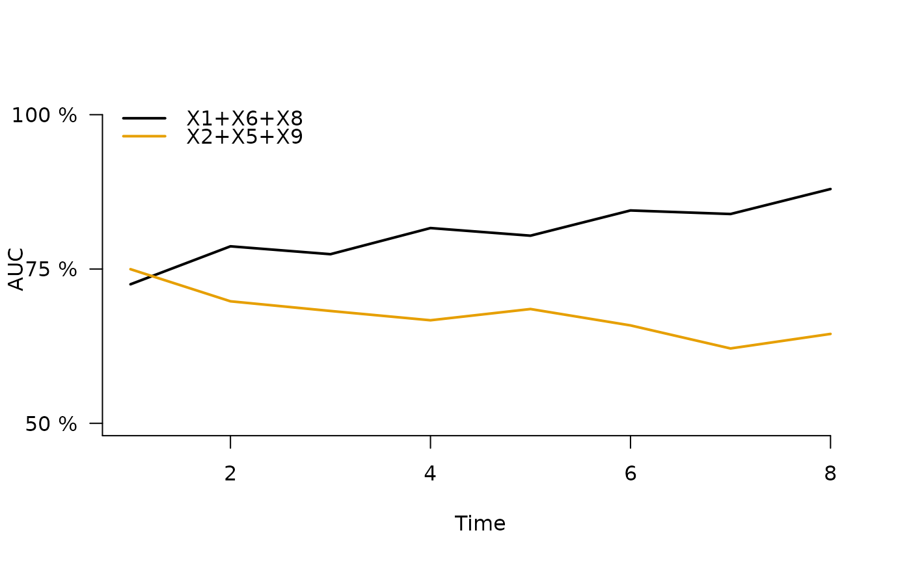
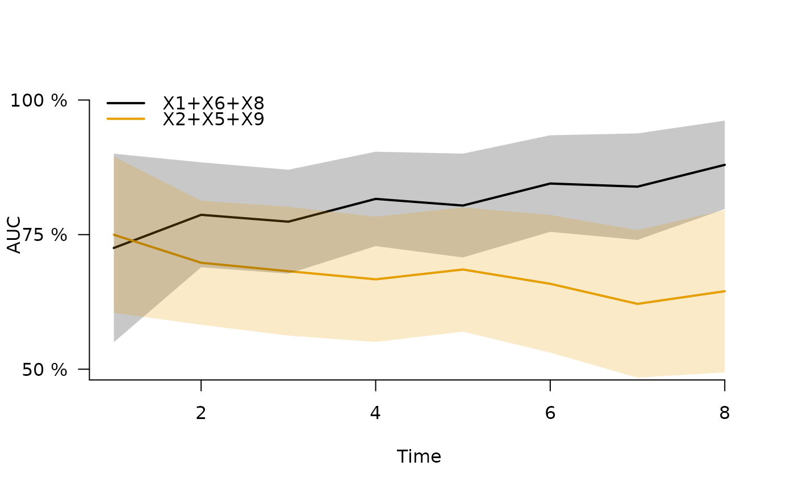

Plot of time-dependent AUC curves
Usage
plotAUC(
x,
models,
which = "score",
xlim,
ylim,
xlab,
ylab,
col,
lwd,
lty = 1,
cex = 1,
pch = 1,
type = "l",
axes = 1L,
percent = 1L,
conf.int = 0L,
legend = 1L,
...
)Arguments
- x
Object obtained with
Score.list- models
Choice of models to plot
- which
Character. Either
"score"to show AUC or"contrasts"to show differences between AUC.- xlim
Limits for x-axis
- ylim
Limits for y-axis
- xlab
Label for x-axis
- ylab
Label for y-axis
- col
line color
- lwd
line width
- lty
line style
- cex
point size
- pch
point style
- type
line type
- axes
Logical. If
TRUEdraw axes.- percent
Logical. If
TRUEscale y-axis in percent.- conf.int
Logical. If
TRUEdraw confidence shadows.- legend
Logical. If
TRUEdraw legend.- ...
Used for additional control of the subroutines: plot,
Examples
library(survival)
library(prodlim)
d=sampleData(100,outcome="survival")
nd=sampleData(100,outcome="survival")
f1=coxph(Surv(time,event)~X1+X6+X8,data=d,x=TRUE,y=TRUE)
f2=coxph(Surv(time,event)~X2+X5+X9,data=d,x=TRUE,y=TRUE)
xx=Score(list("X1+X6+X8"=f1,"X2+X5+X9"=f2), formula=Surv(time,event)~1,
data=nd, metrics="auc", null.model=FALSE, times=seq(3:10))
aucgraph <- plotAUC(xx)

plotAUC(xx,conf.int=TRUE)

## difference between
plotAUC(xx,which="contrasts",conf.int=TRUE)